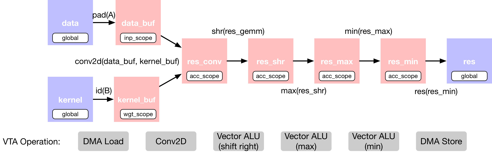
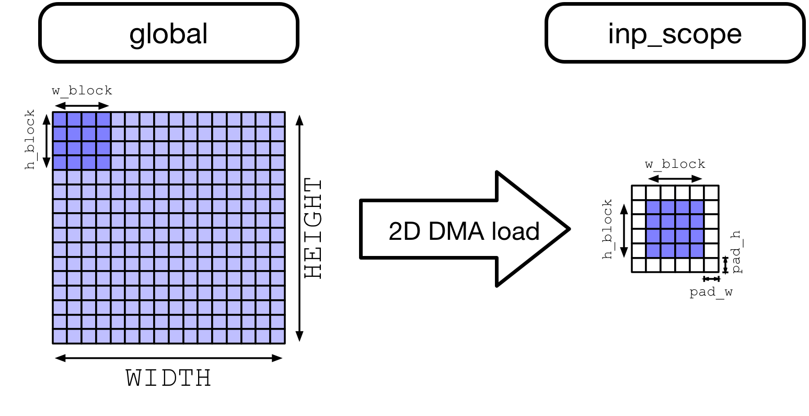

2D 卷积优化
导航
2D 卷积优化#
原作者: Thierry Moreau
本教程提供了关于如何使用 TVM 映射二维卷积工作负载有效的 VTA 设计的概述。建议先学习 分块矩阵乘法 教程。
二维卷积在大多数计算机视觉深度神经网络中占主导地位。在本教程中，将演示 TVM 调度优化，将 NCHW 布局中的 2D 卷积算子映射到 VTA。还引入了延迟隐藏（latency hiding）的概念，它允许最大化 VTA 的计算和内存资源利用。
RPC 设置#
首先编程 Pynq 的 FPGA 并构建它的 RPC 运行时。
import os
import tvm
import tvm.testing
from tvm import te
import vta
import numpy as np
from tvm import rpc
from tvm.contrib import utils
from vta.testing import simulator
# Load VTA parameters from the 3rdparty/vta-hw/config/vta_config.json file
env = vta.get_env()
# We read the Pynq RPC host IP address and port number from the OS environment
host = os.environ.get("VTA_RPC_HOST", "192.168.2.99")
port = int(os.environ.get("VTA_RPC_PORT", "9091"))
# We configure both the bitstream and the runtime system on the Pynq
# to match the VTA configuration specified by the vta_config.json file.
if env.TARGET == "pynq":
# Make sure that TVM was compiled with RPC=1
assert tvm.runtime.enabled("rpc")
remote = rpc.connect(host, port)
# Reconfigure the JIT runtime
vta.reconfig_runtime(remote)
# Program the FPGA with a pre-compiled VTA bitstream.
# You can program the FPGA with your own custom bitstream
# by passing the path to the bitstream file instead of None.
vta.program_fpga(remote, bitstream=None)
# In simulation mode, host the RPC server locally.
elif env.TARGET in ["sim", "tsim"]:
remote = rpc.LocalSession()
声明计算#
作为第一步，需要用 NCHW 格式描述 2D 卷积计算。
通过 batch size、空间维度、输入通道、输出通道、核维度、核维度、填充维度和步长维度来定义二维卷积形状。
选择 ResNet-18 架构的第 9 个卷积层的形状作为卷积 workload 参数。
在 2D 卷积中添加了额外的算子，用于对输出进行移位和剪切，以模拟定点卷积之后的修正线性激活。将二维卷积层的 TVM 数据流图描述如下：
这个计算被故意设置得太大，以至于不能一次全部放入 VTA 的 on-chip buffers。因此，在调度阶段，将依靠计算分块策略将计算分解为可管理的块。
空间填充
注意，需要导入 TOPI 库来对输入特征映射张量应用空间填充（Spatial padding）。空间填充有助于在 2D 卷积环境中分块，因为如果卷积核窗口大小大于 1，那么任何给定层的输入特征映射的相同 (x, y) 空间位置将被读取多次。在 CPU 和 GPU 上，当并行工作时，提高内存访问效率的一种方法是空间打包（spatial packing），这需要重新布局数据。VTA load DMA 引擎可以自动插入填充，这样原始的输入特征映射就不必在内存中重新打包。
当数据从 DRAM load 到 VTA 的 SRAM 时，下面展示了 VTA 对动态空间填充的影响，随后是 2D 跨步和填充内存读取。
{kind=link}
from tvm import topi
# 2D convolution layer dimensions taken from ResNet-18 architecture
# (9th convolutional layer)
batch_size = 1
height = 14
width = 14
in_channels = 256
out_channels = 256
kernel_h = 3
kernel_w = 3
pad_h = 1
pad_w = 1
stride_h = 1
stride_w = 1
assert batch_size % env.BATCH == 0
assert in_channels % env.BLOCK_IN == 0
assert out_channels % env.BLOCK_OUT == 0
# Input feature map: (N, IC, H, W, n, ic)
data_shape = (
batch_size // env.BATCH,
in_channels // env.BLOCK_IN,
height,
width,
env.BATCH,
env.BLOCK_IN,
)
# Kernel: (OC, IC, H, W, oc, ic)
kernel_shape = (
out_channels // env.BLOCK_OUT,
in_channels // env.BLOCK_IN,
kernel_h,
kernel_w,
env.BLOCK_OUT,
env.BLOCK_IN,
)
# Derive output feature map dimensions
fout_height = (height + 2 * pad_h - kernel_h) // stride_h + 1
fout_width = (width + 2 * pad_w - kernel_w) // stride_w + 1
# Output feature map: (N, OC, H, W, n, oc)
output_shape = (
batch_size // env.BATCH,
out_channels // env.BLOCK_OUT,
fout_height,
fout_width,
env.BATCH,
env.BLOCK_OUT,
)
# Convolution reduction axes
dy = te.reduce_axis((0, kernel_h), name="dy")
dx = te.reduce_axis((0, kernel_w), name="dx")
ic = te.reduce_axis((0, in_channels // env.BLOCK_IN), name="ic")
ic_tns = te.reduce_axis((0, env.BLOCK_IN), name="ic_tns")
# Input placeholder tensors
data = te.placeholder(data_shape, name="data", dtype=env.inp_dtype)
kernel = te.placeholder(kernel_shape, name="kernel", dtype=env.wgt_dtype)
# Copy buffers:
# Apply spatial padding to input feature map
data_buf = topi.nn.pad(data, [0, 0, pad_h, pad_w, 0, 0], name="data_buf")
kernel_buf = te.compute(kernel_shape, lambda *i: kernel(*i), "kernel_buf")
# Declare 2D convolution
res_conv = te.compute(
output_shape,
lambda bo, co, i, j, bi, ci: te.sum(
data_buf[bo, ic, i * stride_h + dy, j * stride_w + dx, bi, ic_tns].astype(env.acc_dtype)
* kernel_buf[co, ic, dy, dx, ci, ic_tns].astype(env.acc_dtype),
axis=[ic, dy, dx, ic_tns],
),
name="res_conv",
)
# Add shift stage for fix-point normalization
res_shr = te.compute(output_shape, lambda *i: res_conv(*i) >> 8, name="res_shr")
# Apply clipping between (0, input max value)
inp_max = (1 << (env.INP_WIDTH - 1)) - 1
res_max = te.compute(output_shape, lambda *i: tvm.te.max(res_shr(*i), 0), "res_max")
res_min = te.compute(output_shape, lambda *i: tvm.te.min(res_max(*i), inp_max), "res_min")
# Result Tensor
res = te.compute(output_shape, lambda *i: res_min(*i).astype(env.inp_dtype), name="res")
调度计算#
将看到一组必要的调度变换，以有效的方式将 2D 卷积映射到 VTA。这些包括：
分块计算
增加计算利用率（compute utilization）的虚拟线程（Virtual threading）
Lowering 到 VTA 硬件 intrinsics
# Create TVM schedule
s = te.create_schedule(res.op)
# Let's look at the default TVM schedule
print(tvm.lower(s, [data, kernel, res], simple_mode=True))
@main = primfn(data_1: handle, kernel_1: handle, res_1: handle) -> ()
attr = {"from_legacy_te_schedule": True, "global_symbol": "main", "tir.noalias": True}
buffers = {data: Buffer(data_2: Pointer(int8), int8, [50176], []),
kernel: Buffer(kernel_2: Pointer(int8), int8, [589824], []),
res: Buffer(res_2: Pointer(int8), int8, [50176], [])}
buffer_map = {data_1: data, kernel_1: kernel, res_1: res}
preflattened_buffer_map = {data_1: data_3: Buffer(data_2, int8, [1, 16, 14, 14, 1, 16], []), kernel_1: kernel_3: Buffer(kernel_2, int8, [16, 16, 3, 3, 16, 16], []), res_1: res_3: Buffer(res_2, int8, [1, 16, 14, 14, 1, 16], [])} {
allocate(data_buf: Pointer(global int8), int8, [65536]), storage_scope = global;
allocate(kernel_buf: Pointer(global int8), int8, [589824]), storage_scope = global;
allocate(res_conv: Pointer(global int32), int32, [50176]), storage_scope = global {
for (i1: int32, 0, 16) {
for (i2: int32, 0, 16) {
for (i3: int32, 0, 16) {
for (i5: int32, 0, 16) {
let cse_var_1: int32 = (i3*16)
data_buf_1: Buffer(data_buf, int8, [65536], [])[((((i1*4096) + (i2*256)) + cse_var_1) + i5)] = @tir.if_then_else(((((1 <= i2) && (i2 < 15)) && (1 <= i3)) && (i3 < 15)), data[(((((i1*3136) + (i2*224)) + cse_var_1) + i5) - 240)], 0i8, dtype=int8)
}
}
}
}
for (i0: int32, 0, 16) {
for (i1_1: int32, 0, 16) {
for (i2_1: int32, 0, 3) {
for (i3_1: int32, 0, 3) {
for (i4: int32, 0, 16) {
for (i5_1: int32, 0, 16) {
let cse_var_2: int32 = ((((((i0*36864) + (i1_1*2304)) + (i2_1*768)) + (i3_1*256)) + (i4*16)) + i5_1)
kernel_buf_1: Buffer(kernel_buf, int8, [589824], [])[cse_var_2] = kernel[cse_var_2]
}
}
}
}
}
}
for (co: int32, 0, 16) {
for (i: int32, 0, 14) {
for (j: int32, 0, 14) {
for (ci: int32, 0, 16) {
res_conv_1: Buffer(res_conv, int32, [50176], [])[((((co*3136) + (i*224)) + (j*16)) + ci)] = 0
for (ic: int32, 0, 16) {
for (dy: int32, 0, 3) {
for (dx: int32, 0, 3) {
for (ic_tns: int32, 0, 16) {
let cse_var_4: int32 = (j*16)
let cse_var_3: int32 = ((((co*3136) + (i*224)) + cse_var_4) + ci)
res_conv_1[cse_var_3] = (res_conv_1[cse_var_3] + (cast(int32, data_buf_1[((((((ic*4096) + (i*256)) + (dy*256)) + cse_var_4) + (dx*16)) + ic_tns)])*cast(int32, kernel_buf_1[((((((co*36864) + (ic*2304)) + (dy*768)) + (dx*256)) + (ci*16)) + ic_tns)])))
}
}
}
}
}
}
}
}
for (i1_2: int32, 0, 16) {
for (i2_2: int32, 0, 14) {
for (i3_2: int32, 0, 14) {
for (i5_2: int32, 0, 16) {
let cse_var_5: int32 = ((((i1_2*3136) + (i2_2*224)) + (i3_2*16)) + i5_2)
res_conv_2: Buffer(res_conv, int32, [50176], [])[cse_var_5] = @tir.shift_right(res_conv_1[cse_var_5], 8, dtype=int32)
}
}
}
}
for (i1_3: int32, 0, 16) {
for (i2_3: int32, 0, 14) {
for (i3_3: int32, 0, 14) {
for (i5_3: int32, 0, 16) {
let cse_var_6: int32 = ((((i1_3*3136) + (i2_3*224)) + (i3_3*16)) + i5_3)
res_conv_3: Buffer(res_conv, int32, [50176], [])[cse_var_6] = max(res_conv_2[cse_var_6], 0)
}
}
}
}
for (i1_4: int32, 0, 16) {
for (i2_4: int32, 0, 14) {
for (i3_4: int32, 0, 14) {
for (i5_4: int32, 0, 16) {
let cse_var_7: int32 = ((((i1_4*3136) + (i2_4*224)) + (i3_4*16)) + i5_4)
res_conv_4: Buffer(res_conv, int32, [50176], [])[cse_var_7] = min(res_conv_3[cse_var_7], 127)
}
}
}
}
for (i1_5: int32, 0, 16) {
for (i2_5: int32, 0, 14) {
for (i3_5: int32, 0, 14) {
for (i5_5: int32, 0, 16) {
let cse_var_8: int32 = ((((i1_5*3136) + (i2_5*224)) + (i3_5*16)) + i5_5)
res[cse_var_8] = cast(int8, res_conv_4[cse_var_8])
}
}
}
}
}
}
分块计算#
默认情况下，2D 卷积太大，激活或卷积核权重无法同时适应 VTA 的 on-chip buffer。沿着输入通道、输出通道和高度空间维度应用分块。不沿宽度空间维度进行分块，因为它是 NCHW 布局中的最内层维度（因此，为了增加局部性，最好不要沿最内层维度进行分块）。
# Let's define tiling sizes
b_block = 1 // env.BATCH
oc_block = 128 // env.BLOCK_OUT
ic_block = 16 // env.BLOCK_IN
h_block = 7
w_block = 14
# Tile the output tensor along the spatial and output channel dimensions
# (since by default we are doing single batch inference, the split along
# the batch dimension has no effect)
b, oc, y, x, b_tns, oc_tns = s[res].op.axis
b_out, b_inn = s[res].split(b, factor=b_block)
oc_out, oc_inn = s[res].split(oc, factor=oc_block)
y_out, y_inn = s[res].split(y, factor=h_block)
x_out, x_inn = s[res].split(x, factor=w_block)
s[res].reorder(b_out, oc_out, y_out, x_out, b_inn, oc_inn, y_inn, x_inn, b_tns, oc_tns)
# Move intermediate computation into each output compute tile
s[res_conv].compute_at(s[res], x_out)
s[res_shr].compute_at(s[res], x_out)
s[res_max].compute_at(s[res], x_out)
s[res_min].compute_at(s[res], x_out)
# Apply additional loop split along reduction axis (input channel)
b_inn, oc_inn, y_inn, x_inn, b_tns, oc_tns = s[res_conv].op.axis
ic_out, ic_inn = s[res_conv].split(ic, factor=ic_block)
# Reorder axes.
# 1) Group the VTA tensor axes in the inner most position: b_tns, oc_tns, ic_tns
# to allow TVM to tensorize.
# 2) We move the ic_out axis all the way out of the convolution loop to block
# along the reduction axis.
# 3) Now we re-order the block axes: b_inn, oc_inn, y_inn, x_inn, ic_inn, dy, dx.
# VTA runtime/hardware requires us to write to a different output feature map
# location for every VTA tensor operation.
# This restriction requires us to order one of oc_inn, y_inn or x_inn right
# before b_tns, since they all affect output feature map indexing.
# Therefore, we choose to bring x_inn inside as shown below.
s[res_conv].reorder(ic_out, b_inn, oc_inn, y_inn, ic_inn, dy, dx, x_inn, b_tns, oc_tns, ic_tns)
虚拟线程#
虚拟线程是一种在 VTA 硬件设计中增加任务级管道并行性的机制。换句话说，它通过隐藏内存访问延迟（hiding memory access latency）提高了计算资源的利用率。
在下面的实现中，虚拟线程将工作分配给沿输出通道轴划分的两个线程。在下面的图中，展示了计算 2D 卷积时工作是如何分割的。

# VTA only supports 2 virtual threads
v_threads = 2
# Perform virtual thread split along output channel outer axis
_, tx = s[res].split(oc_out, factor=v_threads)
s[res].reorder(tx, b_out)
s[res].bind(tx, te.thread_axis("cthread"))
# Let's look at the current TVM schedule after blocking and virtual threading
print(tvm.lower(s, [data, kernel, res], simple_mode=True))
@main = primfn(data_1: handle, kernel_1: handle, res_1: handle) -> ()
attr = {"from_legacy_te_schedule": True, "global_symbol": "main", "tir.noalias": True}
buffers = {data: Buffer(data_2: Pointer(int8), int8, [50176], []),
kernel: Buffer(kernel_2: Pointer(int8), int8, [589824], []),
res: Buffer(res_2: Pointer(int8), int8, [50176], [])}
buffer_map = {data_1: data, kernel_1: kernel, res_1: res}
preflattened_buffer_map = {data_1: data_3: Buffer(data_2, int8, [1, 16, 14, 14, 1, 16], []), kernel_1: kernel_3: Buffer(kernel_2, int8, [16, 16, 3, 3, 16, 16], []), res_1: res_3: Buffer(res_2, int8, [1, 16, 14, 14, 1, 16], [])} {
allocate(data_buf: Pointer(global int8), int8, [65536]), storage_scope = global;
allocate(kernel_buf: Pointer(global int8), int8, [589824]), storage_scope = global;
allocate(res_conv: Pointer(global int32), int32, [25088]), storage_scope = global {
for (i1: int32, 0, 16) {
for (i2: int32, 0, 16) {
for (i3: int32, 0, 16) {
for (i5: int32, 0, 16) {
let cse_var_1: int32 = (i3*16)
data_buf_1: Buffer(data_buf, int8, [65536], [])[((((i1*4096) + (i2*256)) + cse_var_1) + i5)] = @tir.if_then_else(((((1 <= i2) && (i2 < 15)) && (1 <= i3)) && (i3 < 15)), data[(((((i1*3136) + (i2*224)) + cse_var_1) + i5) - 240)], 0i8, dtype=int8)
}
}
}
}
for (i0: int32, 0, 16) {
for (i1_1: int32, 0, 16) {
for (i2_1: int32, 0, 3) {
for (i3_1: int32, 0, 3) {
for (i4: int32, 0, 16) {
for (i5_1: int32, 0, 16) {
let cse_var_2: int32 = ((((((i0*36864) + (i1_1*2304)) + (i2_1*768)) + (i3_1*256)) + (i4*16)) + i5_1)
kernel_buf_1: Buffer(kernel_buf, int8, [589824], [])[cse_var_2] = kernel[cse_var_2]
}
}
}
}
}
}
for (i2.outer: int32, 0, 2) {
for (co.init: int32, 0, 8) {
for (i.init: int32, 0, 7) {
for (j.init: int32, 0, 14) {
for (ci.init: int32, 0, 16) {
let cse_var_3: int32 = ((((co.init*1568) + (i.init*224)) + (j.init*16)) + ci.init)
{
res_conv_1: Buffer(res_conv, int32, [157351936], [])[cse_var_3] = 0
res_conv_1[(cse_var_3 + 12544)] = 0
}
}
}
}
}
for (ic.outer: int32, 0, 16) {
for (co: int32, 0, 8) {
for (i: int32, 0, 7) {
for (dy: int32, 0, 3) {
for (dx: int32, 0, 3) {
for (j: int32, 0, 14) {
for (ci: int32, 0, 16) {
for (ic_tns: int32, 0, 16) {
let cse_var_8: int32 = (j*16)
let cse_var_7: int32 = ((((co*1568) + (i*224)) + cse_var_8) + ci)
let cse_var_6: int32 = (cse_var_7 + 12544)
let cse_var_5: int32 = ((((((co*36864) + (ic.outer*2304)) + (dy*768)) + (dx*256)) + (ci*16)) + ic_tns)
let cse_var_4: int32 = (((((((ic.outer*4096) + (i2.outer*1792)) + (i*256)) + (dy*256)) + cse_var_8) + (dx*16)) + ic_tns)
{
res_conv_1[cse_var_7] = (res_conv_1[cse_var_7] + (cast(int32, data_buf_1[cse_var_4])*cast(int32, kernel_buf_1[cse_var_5])))
res_conv_1[cse_var_6] = (res_conv_1[cse_var_6] + (cast(int32, data_buf_1[cse_var_4])*cast(int32, kernel_buf_1[(cse_var_5 + 294912)])))
}
}
}
}
}
}
}
}
}
for (i1_2: int32, 0, 8) {
for (i2_2: int32, 0, 7) {
for (i3_2: int32, 0, 14) {
for (i5_2: int32, 0, 16) {
let cse_var_10: int32 = ((((i1_2*1568) + (i2_2*224)) + (i3_2*16)) + i5_2)
let cse_var_9: int32 = (cse_var_10 + 12544)
{
res_conv_2: Buffer(res_conv, int32, [157351936], [])[cse_var_10] = @tir.shift_right(res_conv_1[cse_var_10], 8, dtype=int32)
res_conv_2[cse_var_9] = @tir.shift_right(res_conv_1[cse_var_9], 8, dtype=int32)
}
}
}
}
}
for (i1_3: int32, 0, 8) {
for (i2_3: int32, 0, 7) {
for (i3_3: int32, 0, 14) {
for (i5_3: int32, 0, 16) {
let cse_var_12: int32 = ((((i1_3*1568) + (i2_3*224)) + (i3_3*16)) + i5_3)
let cse_var_11: int32 = (cse_var_12 + 12544)
{
res_conv_3: Buffer(res_conv, int32, [157351936], [])[cse_var_12] = max(res_conv_2[cse_var_12], 0)
res_conv_3[cse_var_11] = max(res_conv_2[cse_var_11], 0)
}
}
}
}
}
for (i1_4: int32, 0, 8) {
for (i2_4: int32, 0, 7) {
for (i3_4: int32, 0, 14) {
for (i5_4: int32, 0, 16) {
let cse_var_14: int32 = ((((i1_4*1568) + (i2_4*224)) + (i3_4*16)) + i5_4)
let cse_var_13: int32 = (cse_var_14 + 12544)
{
res_conv_4: Buffer(res_conv, int32, [157351936], [])[cse_var_14] = min(res_conv_3[cse_var_14], 127)
res_conv_4[cse_var_13] = min(res_conv_3[cse_var_13], 127)
}
}
}
}
}
for (i1.inner: int32, 0, 8) {
for (i2.inner: int32, 0, 7) {
for (i3.inner: int32, 0, 14) {
for (i5_5: int32, 0, 16) {
let cse_var_18: int32 = (i2.inner*224)
let cse_var_17: int32 = (i3.inner*16)
let cse_var_16: int32 = ((((i1.inner*1568) + cse_var_18) + cse_var_17) + i5_5)
let cse_var_15: int32 = (((((i1.inner*3136) + (i2.outer*1568)) + cse_var_18) + cse_var_17) + i5_5)
{
res[cse_var_15] = cast(int8, res_conv_4[cse_var_16])
res[(cse_var_15 + 25088)] = cast(int8, res_conv_4[(cse_var_16 + 12544)])
}
}
}
}
}
}
}
}
Lowering Copies 到 DMA Transfers#
接下来，设置相应的 on-chip VTA SRAM buffers 的 buffers 作用域。将 load 循环移动到 2D 卷积计算循环，以 stage 内存加载，以便它们适合 on-chip SRAM buffers。最后，用 DMA 复制 pragma 注解了 load/store 循环外轴，以便在 VTA 上执行大容量内存传输。
# Set scope of SRAM buffers
s[data_buf].set_scope(env.inp_scope)
s[kernel_buf].set_scope(env.wgt_scope)
s[res_conv].set_scope(env.acc_scope)
s[res_shr].set_scope(env.acc_scope)
s[res_min].set_scope(env.acc_scope)
s[res_max].set_scope(env.acc_scope)
# Block data and kernel cache reads
s[data_buf].compute_at(s[res_conv], ic_out)
s[kernel_buf].compute_at(s[res_conv], ic_out)
# Use DMA copy pragma on DRAM->SRAM operations
s[data_buf].pragma(s[data_buf].op.axis[0], env.dma_copy)
s[kernel_buf].pragma(s[kernel_buf].op.axis[0], env.dma_copy)
# Use DMA copy pragma on SRAM->DRAM operation in each result block
# (this implies that these copies should be performed along b_inn,
# or result axis 4)
s[res].pragma(s[res].op.axis[4], env.dma_copy)
Lowering 计算到 VTA 计算 Intrinsics#
最后阶段是通过将二维卷积映射为张量 intrinsics，并将位移和剪切计算映射为向量 ALU，从而将计算循环 lower 到 VTA 硬件 intrinsics。
# Apply tensorization over the batch tensor tile axis
s[res_conv].tensorize(b_tns, env.gemm)
# Add an ALU pragma over the shift and clipping operations
s[res_shr].pragma(s[res_shr].op.axis[0], env.alu)
s[res_min].pragma(s[res_min].op.axis[0], env.alu)
s[res_max].pragma(s[res_max].op.axis[0], env.alu)
# Let's look at the final lowered TVM schedule after lowering memory
# loads/stores down to DMA copy intrinsics, and the computation down to
# VTA compute intrinsics.
print(vta.lower(s, [data, kernel, res], simple_mode=True))
@main = primfn(data_1: handle, kernel_1: handle, res_1: handle) -> ()
attr = {"from_legacy_te_schedule": True, "global_symbol": "main", "tir.noalias": True}
buffers = {data: Buffer(data_2: Pointer(int8), int8, [50176], []),
kernel: Buffer(kernel_2: Pointer(int8), int8, [589824], []),
res: Buffer(res_2: Pointer(int8), int8, [50176], [])}
buffer_map = {data_1: data, kernel_1: kernel, res_1: res}
preflattened_buffer_map = {data_1: data_3: Buffer(data_2, int8, [1, 16, 14, 14, 1, 16], []), kernel_1: kernel_3: Buffer(kernel_2, int8, [16, 16, 3, 3, 16, 16], []), res_1: res_3: Buffer(res_2, int8, [1, 16, 14, 14, 1, 16], [])} {
@tir.vta.coproc_dep_push(3, 2, dtype=int32)
@tir.vta.coproc_dep_push(3, 2, dtype=int32)
for (i2.outer: int32, 0, 2) {
for (cthread.s: int32, 0, 2) {
attr [IterVar(vta: int32, (nullptr), "ThreadIndex", "vta")] "coproc_scope" = 2 {
@tir.vta.coproc_dep_pop(3, 2, dtype=int32)
attr [IterVar(vta, (nullptr), "ThreadIndex", "vta")] "coproc_uop_scope" = "VTAPushGEMMOp" {
@tir.call_extern("VTAUopLoopBegin", 8, 98, 0, 0, dtype=int32)
@tir.call_extern("VTAUopLoopBegin", 7, 14, 0, 0, dtype=int32)
for (j.init: int32, 0, 14) {
@tir.vta.uop_push(0, 1, ((cthread.s*784) + j.init), 0, 0, 0, 0, 0, dtype=int32)
}
@tir.call_extern("VTAUopLoopEnd", dtype=int32)
@tir.call_extern("VTAUopLoopEnd", dtype=int32)
}
@tir.vta.coproc_dep_push(2, 1, dtype=int32)
}
}
for (ic.outer: int32, 0, 16) {
let cse_var_6: int32 = (i2.outer*7)
let cse_var_5: int32 = (ic.outer*9)
let cse_var_4: int32 = max((1 - cse_var_6), 0)
let cse_var_3: int32 = max((cse_var_6 - 6), 0)
let cse_var_2: int32 = ((9 - cse_var_4) - cse_var_3)
let cse_var_1: int32 = ((((ic.outer*196) + (i2.outer*98)) + (cse_var_4*14)) - 14)
{
attr [IterVar(vta, (nullptr), "ThreadIndex", "vta")] "coproc_scope" = 1 {
@tir.vta.coproc_dep_pop(2, 1, dtype=int32)
@tir.call_extern("VTALoadBuffer2D", @tir.tvm_thread_context(@tir.vta.command_handle(, dtype=handle), dtype=handle), data_2, cse_var_1, 14, cse_var_2, 14, 1, cse_var_4, 1, cse_var_3, 0, 2, dtype=int32)
@tir.call_extern("VTALoadBuffer2D", @tir.tvm_thread_context(@tir.vta.command_handle(, dtype=handle), dtype=handle), kernel_2, cse_var_5, 9, 8, 144, 0, 0, 0, 0, 0, 1, dtype=int32)
@tir.vta.coproc_dep_push(1, 2, dtype=int32)
}
attr [IterVar(vta, (nullptr), "ThreadIndex", "vta")] "coproc_scope" = 1 {
@tir.vta.coproc_dep_pop(2, 1, dtype=int32)
@tir.call_extern("VTALoadBuffer2D", @tir.tvm_thread_context(@tir.vta.command_handle(, dtype=handle), dtype=handle), data_2, cse_var_1, 14, cse_var_2, 14, 1, cse_var_4, 1, cse_var_3, 144, 2, dtype=int32)
@tir.call_extern("VTALoadBuffer2D", @tir.tvm_thread_context(@tir.vta.command_handle(, dtype=handle), dtype=handle), kernel_2, (cse_var_5 + 1152), 9, 8, 144, 0, 0, 0, 0, 72, 1, dtype=int32)
@tir.vta.coproc_dep_push(1, 2, dtype=int32)
}
for (cthread.s_1: int32, 0, 2) {
attr [IterVar(vta, (nullptr), "ThreadIndex", "vta")] "coproc_scope" = 2 {
@tir.vta.coproc_dep_pop(1, 2, dtype=int32)
attr [IterVar(vta, (nullptr), "ThreadIndex", "vta")] "coproc_uop_scope" = "VTAPushGEMMOp" {
@tir.call_extern("VTAUopLoopBegin", 8, 98, 0, 9, dtype=int32)
@tir.call_extern("VTAUopLoopBegin", 7, 14, 16, 0, dtype=int32)
for (dy: int32, 0, 3) {
for (dx: int32, 0, 3) {
for (j: int32, 0, 14) {
@tir.vta.uop_push(0, 0, ((cthread.s_1*784) + j), ((((cthread.s_1*144) + (dy*16)) + j) + dx), (((cthread.s_1*72) + (dy*3)) + dx), 0, 0, 0, dtype=int32)
}
}
}
@tir.call_extern("VTAUopLoopEnd", dtype=int32)
@tir.call_extern("VTAUopLoopEnd", dtype=int32)
}
@tir.vta.coproc_dep_push(2, 1, dtype=int32)
}
}
}
}
@tir.vta.coproc_dep_pop(2, 1, dtype=int32)
@tir.vta.coproc_dep_pop(2, 1, dtype=int32)
for (cthread.s_2: int32, 0, 2) {
let cse_var_7: int32 = (cthread.s_2*784)
attr [IterVar(vta, (nullptr), "ThreadIndex", "vta")] "coproc_scope" = 2 {
attr [IterVar(vta, (nullptr), "ThreadIndex", "vta")] "coproc_uop_scope" = "VTAPushALUOp" {
@tir.call_extern("VTAUopLoopBegin", 784, 1, 1, 0, dtype=int32)
@tir.vta.uop_push(1, 0, cse_var_7, cse_var_7, 0, 3, 1, 8, dtype=int32)
@tir.call_extern("VTAUopLoopEnd", dtype=int32)
}
attr [IterVar(vta, (nullptr), "ThreadIndex", "vta")] "coproc_uop_scope" = "VTAPushALUOp" {
@tir.call_extern("VTAUopLoopBegin", 784, 1, 1, 0, dtype=int32)
@tir.vta.uop_push(1, 0, cse_var_7, cse_var_7, 0, 1, 1, 0, dtype=int32)
@tir.call_extern("VTAUopLoopEnd", dtype=int32)
}
attr [IterVar(vta, (nullptr), "ThreadIndex", "vta")] "coproc_uop_scope" = "VTAPushALUOp" {
@tir.call_extern("VTAUopLoopBegin", 784, 1, 1, 0, dtype=int32)
@tir.vta.uop_push(1, 0, cse_var_7, cse_var_7, 0, 0, 1, 127, dtype=int32)
@tir.call_extern("VTAUopLoopEnd", dtype=int32)
}
@tir.vta.coproc_dep_push(2, 3, dtype=int32)
}
}
for (cthread.s_3: int32, 0, 2) {
attr [IterVar(vta, (nullptr), "ThreadIndex", "vta")] "coproc_scope" = 3 {
@tir.vta.coproc_dep_pop(2, 3, dtype=int32)
for (i1.inner: int32, 0, 8) {
for (i2.inner: int32, 0, 7) {
for (i3.inner: int32, 0, 14) {
let cse_var_8: int32 = (i2.inner*14)
@tir.call_extern("VTAStoreBuffer2D", @tir.tvm_thread_context(@tir.vta.command_handle(, dtype=handle), dtype=handle), ((((cthread.s_3*784) + (i1.inner*98)) + cse_var_8) + i3.inner), 4, res_2, (((((cthread.s_3*1568) + (i1.inner*196)) + (i2.outer*98)) + cse_var_8) + i3.inner), 1, 1, 1, dtype=int32)
}
}
}
@tir.vta.coproc_dep_push(3, 2, dtype=int32)
}
}
}
@tir.vta.coproc_dep_pop(3, 2, dtype=int32)
@tir.vta.coproc_dep_pop(3, 2, dtype=int32)
@tir.vta.coproc_sync(, dtype=int32)
}
[16:02:31] /media/pc/data/4tb/lxw/books/tvm/src/tir/transforms/arg_binder.cc:95: Warning: Trying to bind buffer to another one with lower alignment requirement required_alignment=256, provided_alignment=128
TVM 计算和验证#
在指定调度之后，可以将其编译为 TVM 函数。保存模块，这样就可以通过 RPC 发送它。运行该函数并对 numpy 实现进行验证，以确保其正确性。
# This library facilitates 2D convolution testing
from tvm.topi.testing import conv2d_nchw_python
# Compile the TVM module
with vta.build_config(disabled_pass={"tir.CommonSubexprElimTIR"}):
my_conv = vta.build(
s, [data, kernel, res], tvm.target.Target("ext_dev", host=env.target_host), name="my_conv"
)
temp = utils.tempdir()
my_conv.save(temp.relpath("conv2d.o"))
remote.upload(temp.relpath("conv2d.o"))
f = remote.load_module("conv2d.o")
# Get the remote device context
ctx = remote.ext_dev(0)
# Initialize the data and kernel arrays randomly in the int range
# of (-128, 128] in NCHW layout
data_np = np.random.randint(-128, 128, size=(batch_size, in_channels, height, width)).astype(
data.dtype
)
kernel_np = np.random.randint(
-128, 128, size=(out_channels, in_channels, kernel_h, kernel_w)
).astype(kernel.dtype)
# Apply packing to the data and kernel arrays from a 2D NCHW
# to a 4D NCHWnc packed layout
data_packed = data_np.reshape(
batch_size // env.BATCH, env.BATCH, in_channels // env.BLOCK_IN, env.BLOCK_IN, height, width
).transpose((0, 2, 4, 5, 1, 3))
kernel_packed = kernel_np.reshape(
out_channels // env.BLOCK_OUT,
env.BLOCK_OUT,
in_channels // env.BLOCK_IN,
env.BLOCK_IN,
kernel_h,
kernel_w,
).transpose((0, 2, 4, 5, 1, 3))
# Format the input/output arrays with tvm.nd.array to the DLPack standard
data_nd = tvm.nd.array(data_packed, ctx)
kernel_nd = tvm.nd.array(kernel_packed, ctx)
res_nd = tvm.nd.array(np.zeros(output_shape).astype(res.dtype), ctx)
# Clear stats
if env.TARGET in ["sim", "tsim"]:
simulator.clear_stats()
# Invoke the module to perform the computation
f(data_nd, kernel_nd, res_nd)
# Verify against numpy implementation
res_ref = conv2d_nchw_python(
data_np.astype(env.acc_dtype),
kernel_np.astype(env.acc_dtype),
(stride_h, stride_w),
(pad_h, pad_w),
).astype(env.acc_dtype)
res_ref = res_ref >> env.INP_WIDTH
res_ref = np.clip(res_ref, 0, inp_max)
res_ref = res_ref.astype(res.dtype)
res_ref = res_ref.reshape(
(
batch_size // env.BATCH,
env.BATCH,
out_channels // env.BLOCK_OUT,
env.BLOCK_OUT,
fout_height,
fout_width,
)
).transpose((0, 2, 4, 5, 1, 3))
tvm.testing.assert_allclose(res_ref, res_nd.numpy())
# Print stats
if env.TARGET in ["sim", "tsim"]:
sim_stats = simulator.stats()
print("Execution statistics:")
for k, v in sim_stats.items():
print("\t{:<16}: {:>16}".format(k, v))
print("Successful 2D convolution test!")
Execution statistics:
inp_load_nbytes : 114688
wgt_load_nbytes : 1179648
acc_load_nbytes : 0
uop_load_nbytes : 1144
out_store_nbytes: 50176
gemm_counter : 451584
alu_counter : 9408
Successful 2D convolution test!
[16:02:32] /media/pc/data/4tb/lxw/books/tvm/src/tir/transforms/arg_binder.cc:95: Warning: Trying to bind buffer to another one with lower alignment requirement required_alignment=256, provided_alignment=128
/media/workspace/anaconda3/envs/mx/lib/python3.10/site-packages/tvm/driver/build_module.py:263: UserWarning: target_host parameter is going to be deprecated. Please pass in tvm.target.Target(target, host=target_host) instead.
warnings.warn(
小结#
本教程演示如何使用 TVM 调度原语 lower 硬件加速器 intrinsics 的 2D 卷积，利用特定于硬件的优化，比如使用带虚拟线程的隐藏延迟。